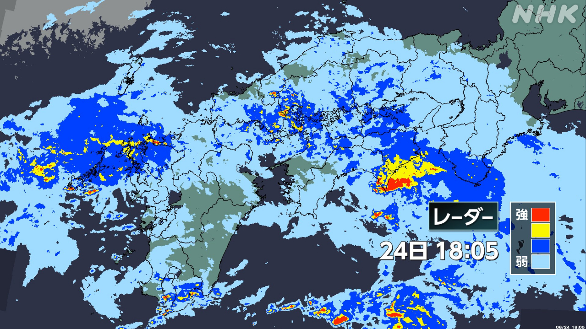
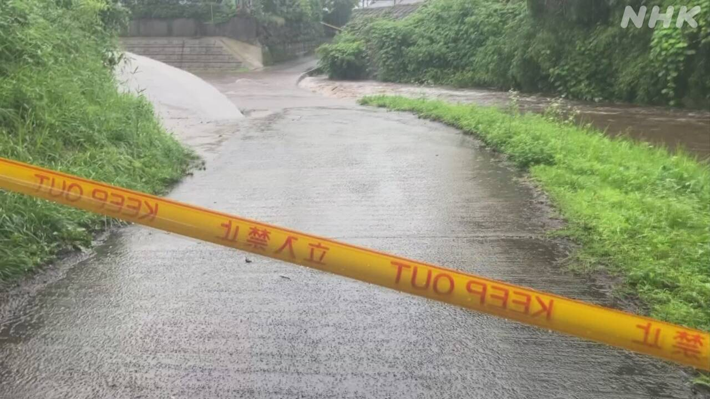

最新ニュース
1️⃣ 四国や九州でたくさん雨が降っている 災害に気をつけて

四国や九州でたくさん雨が降っています。
雨がたくさん降った鹿児島県では、山が崩れる危険があります。そのため、土砂災害の危険を知らせるレベル4危険警報が出ている所があります。
九州と四国では24日から25日、東海と近畿、東京の伊豆諸島では25日、たくさん雨が降りそうです。
山が崩れたり、家に水が入ったり、川の水が増えたりする危険があります。気象庁は災害に気をつけるように言っています。
台風7号も日本に近づいています。
沖縄では、25日から強い風が吹いて、たくさん雨が降りそうです。気をつけてください。
2️⃣ 熊本県と鹿児島県 たくさん雨が降った所で被害が出た

たくさん雨が降った所で、被害が出ています。
熊本県阿蘇市で、24日の朝、「自転車に乗った人が川に流された」と警察に連絡がありました。警察によると、水が増えた川のそばで、流された女性が木につかまっていました。女性は、1時間ぐらい後に助けられました。
鹿児島県薩摩川内市では、24日午前9時までの1時間に、108ミリのとてもたくさんの雨が降りました。川の水があふれて、水が家に入った所がありました。消防がボートなどを使って24人を助けました。
鹿児島県さつま町では、家の近くの山が崩れた所がありました。けがをした人はいませんでした。
3️⃣ 島根県出雲市の商店街で火事があった
23日の夜、7時半ごろ島根県出雲市で火事がありました。
火事があったのは「サンロードなかまち」という商店街で、多くの店が並んでいます。20ぐらいの建物が焼けました。焼けた面積は、全部で3400㎡ぐらいです。
10時間以上過ぎて、24日午前6時前に、火はほとんど消えました。
けがをした人はいませんが、消防の人2人が具合が悪くなって病院に運ばれました。
洋服の店の人は「何も考えられないくらいびっくりしています。売る服が燃えてしまって残念です」と話していました。
4️⃣ 今年5月 熱中症で4000人以上が病院に運ばれた
先月、日本は気温の高い日が多くなりました。
4000人以上が熱中症で病院に運ばれました。5月では今までで2番目に多くなりました。
具合が悪くなった場所は、「家の中」がいちばん多くて、30％ぐらいでした。
年齢では、65歳以上の人が60%ぐらいでいちばん多くなっています。
総務省消防庁は「よく水を飲んだり、エアコンを使ったりしてほしい」と話しています。
- 〜ている / 〜でいる
- 〜がある / 〜がいる
- 〜ため
- 〜ところ
- 使役 (〜させる / 〜せる)
- 〜から
- 〜そうだ
- 〜たり〜たりする
- 〜ように
- 〜てください / 〜でください
- 〜によると
- 〜後 / 〜あと
- 〜くらい / 〜ぐらい
- 〜まで
- 〜ても / 〜でも
- 〜など
- 〜ごろ
- 〜という
- 〜以上
- 〜すぎる
- 〜前に
- 〜てしまう
- 〜中
vebaev.github.io
Generated: 2026-06-24 17:06:22 UTC